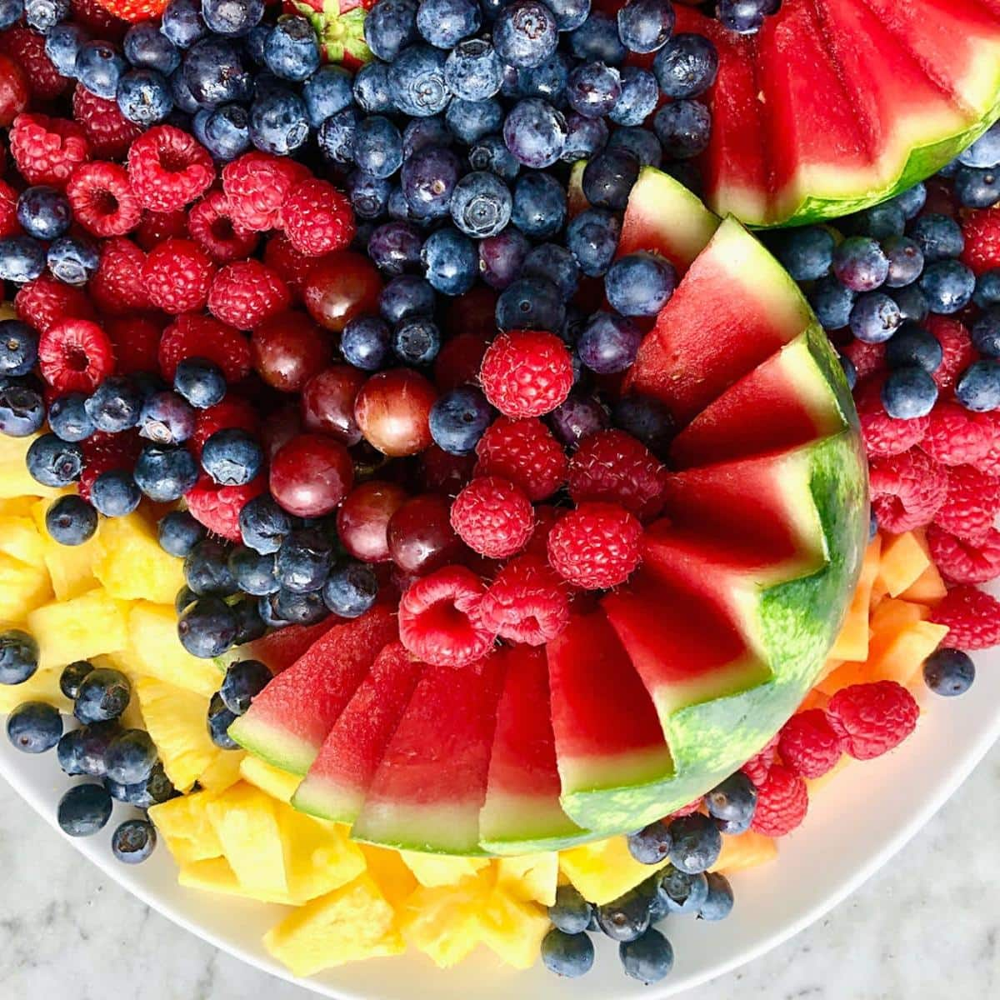

Fall-In-Love Fruit Platter

You can never go wrong with a fruit platter. Get ready to master this refreshing and beautiful crowd-pleaser.
Okay who are we kidding. We're not really gonna teach you anything you didn't know about cutting fruit and putting it on a plate. We are just going to bring to your attention that this really is the way to go when in doubt.
Yes. A fruit platter always wins. Always delivers. So next time you're contemplating what to bring to a pot-luck, just grab this option on the Google Sheet autopilot. It's so easy. You don't have to think.
Ingrediants
- Choose 4-6 fruits. Give options but don't go crazy.
- Avoid overly-juicy fruits that will dominate the taste of the entire thing.
- Avoid fruits that will get brown before it's showtime.
- Berries are your friend.
Steps
- Wash the fruit with something that will address pestasides.
- Cut the fruit into pieces that would be comfortable to hold with two fingers.
- Choose a platter that's nice but lets the fruit be the star.
- Decide if your feeling rows/clusters/curcular design.
- Remeber to thank us for convincing you to go with this bullet-proof option.